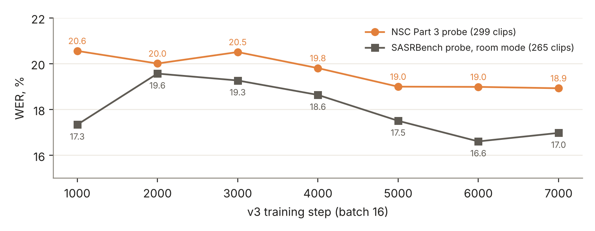
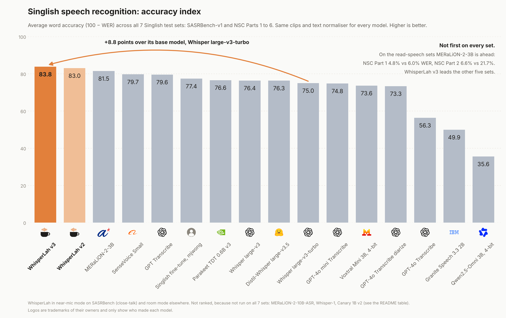
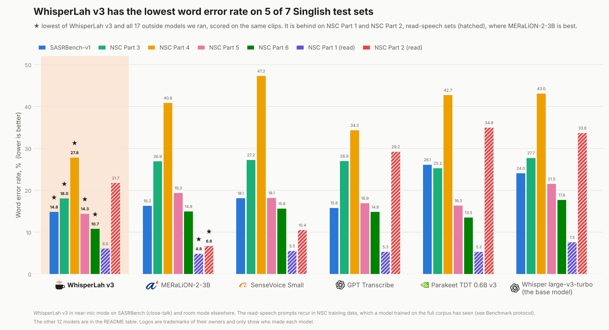
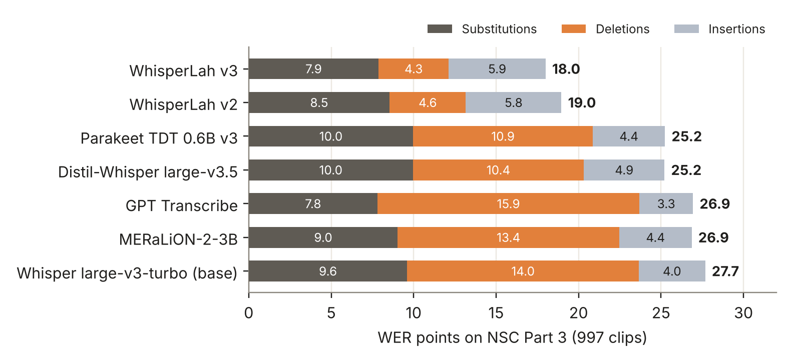
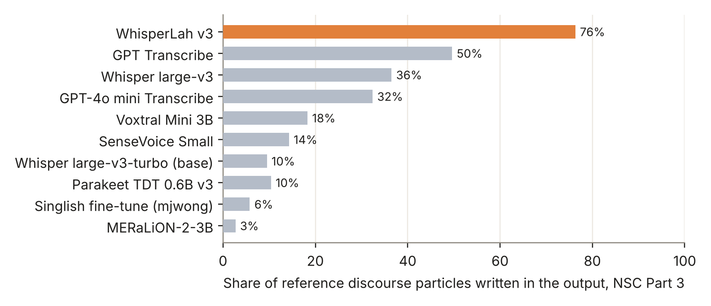

WhisperLah is a speech recognition model for Singapore English (Singlish), built for Lepaq, a meeting-memory CRM for coffee chats and sales meetings. It is a LoRA adapter (27.9 M trainable parameters) on OpenAI's open whisper-large-v3-turbo, trained on public IMDA National Speech Corpus data plus English meeting and read speech. All training ran on one 8 GB laptop GPU, about 31 GPU-hours across three versions. One adapter serves two labelling conventions, switched by a text prompt: room mode transcribes everyone, and near-mic mode transcribes only the wearer of a close-talk mic.
On a contamination-checked benchmark of seven Singlish test sets, scored with one text normaliser for every system, WhisperLah has the lowest word error rate (WER) on five of them, against 17 other open models and API settings. v3, the release, is lowest on four and ahead of every outside system on the fifth. This includes both public benchmarks: 14.8% on SASRBench-v1 (next best 15.8%, OpenAI GPT Transcribe) and 18.0% on NSC Part 3 two-person conversation (next best 25.2%). Most of the gain comes from deletions. Other systems drop the second speaker and the discourse particles (lah, leh, lor), and WhisperLah writes them down: it recalls 76% of particles on NSC Part 3, against 50% for the next best system. It is behind A*STAR's MERaLiON-2-3B on the two read-speech sets. Served as an int8 CTranslate2 model with pyannote diarization, it transcribes and diarizes a 61-minute meeting in 161 s on the laptop GPU, and a public 17.5-minute meeting in 49 s warm on a cloud L4.
scripts/, results/). Every figure in this report is drawn from results/table.json or from the measured serving runs cited in Section 8.Singlish is the English spoken day to day in Singapore. It has its own phonology and prosody, discourse particles borrowed from Hokkien, Cantonese and Malay (lah, leh, lor, meh, sia, hor, mah, liao), local names and terms, and frequent switches into Mandarin, Malay or Hokkien inside one sentence. General-purpose recognisers trained mostly on US and UK English handle it poorly. The base model WhisperLah adapts, whisper-large-v3-turbo, scores 27.7% WER on NSC Part 3 conversation and writes down only 10% of the particles.
Lepaq records coffee chats and sales meetings, typically with a phone on a table and two or more speakers, and turns them into a diarized transcript, a report and a growing profile of each contact. So the target is conversational, multi-speaker Singlish, not read speech. Particles also matter: they carry stance and politeness, and an assistant that drops them loses some of the meaning.
This report describes how WhisperLah was built (Sections 2 to 5), how it was evaluated (Section 6), what it achieves and where it falls short (Section 7), how it is served inside Lepaq (Sections 8 and 9), and what remains open (Sections 10 and 11). We aimed for three things:
WhisperLah is a low-rank adapter (LoRA) on openai/whisper-large-v3-turbo (MIT licence, 809 M parameters: the 32-layer large-v3 encoder and a 4-layer decoder). The base weights stay frozen in bf16. The adapter adds rank-32 updates (α = 64, dropout 0.05) to every attention projection (q_proj, k_proj, v_proj, out_proj) and to both MLP projections (fc1, fc2) of the encoder and the decoder. That is 27.9 M trainable parameters, about 3.4% of the base model.
| Component | Setting |
|---|---|
| Base model | openai/whisper-large-v3-turbo, frozen, bf16, SDPA attention |
| Adapter | LoRA r = 32, α = 64, dropout 0.05, no bias; adapter weights kept in fp32 |
| Target modules | q/k/v/out and fc1/fc2, in every encoder and decoder layer |
| Trainable parameters | 27.9 M (about 3.4% of the base) |
| Input | 128-bin log-mel, 30 s window, 16 kHz audio |
| Decoder prefix | <|startoftranscript|><|en|><|transcribe|><|notimestamps|>; optional prompt for near-mic mode (Section 3) |
Most of the gap on Singlish is acoustic: accent, particles, fast turn-taking and overlapping speech. A decoder-only adaptation could learn spelling and vocabulary, but it would not change what the encoder hears. Section 7.3 shows where the gain comes from. The base model's largest error class on conversation is deletion, meaning words it never emits. Adapting the encoder is what lets WhisperLah recover them.
The constraint was one 8 GB laptop GPU (NVIDIA RTX 4060). With a frozen bf16 base, fp32 adapter weights and gradient checkpointing, training peaks at 3.2 GB of GPU memory. Turbo's 4-layer decoder makes decoding several times faster than large-v3's 32 layers, which matters for serving (Section 8). For deployment the adapter is merged into the base weights, so the served model has exactly turbo's architecture and speed.
The two public Singlish benchmarks disagree about whose words count. The NSC conversation test sets label everyone in the room. SASRBench-v1 is cut from the same NSC Part 3 recordings, but labels only the speaker wearing the close-talk mic, even though the other speaker is audible. A model that writes down the background speaker is correct for meeting notes and "wrong" on SASRBench, where those words are counted as insertions.
WhisperLah v1 did exactly this. Most of its SASRBench errors were the other person's real words: its insertions (4,763) were about double its substitutions (2,541). The public Singlish fine-tune we compare against learned the opposite convention and drops the second speaker on NSC conversation. Rather than pick one convention, or tune per benchmark, v2 and v3 learn both, and a Whisper text prompt selects between them:
| Mode | How it is selected | Use |
|---|---|---|
| Room (default) | no prompt | meetings and coffee chats: transcribe everyone |
| Near-mic | prompt <|startofprev|> Near speaker only. | lapel or headset mic: transcribe the wearer only |
Training data for near-mic mode. NSC has no labels for this convention, so we synthesised them. Single-speaker Singlish read speech (NSC Parts 1 and 2) is mixed with a random stretch of NSC Part 3 conversation 6 to 20 dB quieter, and labelled with the near speaker's words only. This gives 6,332 mixtures. The prompt tokens and the <|startoftranscript|> prediction are masked out of the loss (label −100), so the model learns to condition on the prompt and is never trained to produce it.
Both modes are reported on every public benchmark, so the reader can see the choice rather than have it tuned per test. In this report the headline SASRBench number uses near-mic mode, because SASRBench labels the near speaker. Every NSC number uses room mode, because NSC labels everyone. The accuracy index in Section 7.1 follows the same rule.
All Singlish training audio comes from IMDA's National Speech Corpus (NSC), through A*STAR MERaLiON's Multitask National Speech Corpus (MNSC) release, which also defines the held-out test splits used in Section 6. English data (AMI meetings and LibriSpeech) was added in v3 to stop a regression on English. No test-split audio is used for training, and test clips whose transcripts overlap training text are removed from scoring (Section 6.2).
| Source | Content | v1 | v2 | v3 |
|---|---|---|---|---|
| NSC Part 1 | read sentences | – | 2,929 | 2,929 |
| NSC Part 2 | read sentences with Singapore names and terms | – | 3,403 | 37,434 |
| NSC Part 3 | two-person free conversation | ≈52 h | 11,257 | 38,283 |
| NSC Part 4 | conversation, incl. code-switching | – | 2,265 | 9,627 |
| NSC Part 5 | conversation | – | 1,871 | 8,108 |
| NSC Part 6 | conversation | – | 2,582 | 9,034 |
| Near-mic mixtures | Parts 1–2 over quiet Part 3 (Section 3) | – | 6,332 | 6,332 |
| AMI, headset mic | English meetings, close-talk | – | – | 20,612 |
| AMI, table mic | English meetings, far-field single distant mic | – | – | 31,467 |
| LibriSpeech | English read speech | – | – | 10,194 |
| Total clips | Part 3 slice | 30,639 | 174,020 | |
v3's store is dominated by sources that are not the product's target: NSC Part 2 alone has 37 k clips, because its shards are about ten times denser than Part 3's. Part 2 is drawn at 0.1× its share of clips. It is there for Singapore names and terms, and its prompt sentences recur in the test split. The English sources (AMI headset, AMI table, LibriSpeech) are drawn at 0.6×, so the mix stays mostly Singlish. Sampling is with replacement under these weights, and one "epoch" is still one draw per usable clip.
NSC transcripts carry markup: speaker tags, fillers in parentheses, foreign words between hashes, particles in square brackets. One cleaning function (clean_nsc in scripts/common.py) is applied to every training target. It keeps the particles as plain words ([lah] → lah) so the model learns to write them. Targets are truncated to Whisper's 448-token decoder limit.
Log-mel features are precomputed once. To fit tens of thousands of clips on a laptop disk, they are stored unpadded in one flat fp16 file with an index. A short read-speech clip is about 500 frames, not 3,000. Whisper pads with silence, and its log-mel normalisation turns silence into one per-clip constant (max − 2.0), so padding can be rebuilt exactly at batch time. We checked this against Whisper's own feature extractor. This kept v2's 31 k clips in 8.5 GB. v3's store, with every source above, was 54 GB.
Every version uses the same loop: teacher-forced cross-entropy on the transcript tokens, AdamW (weight decay 0.01), gradient clipping at 1.0, linear warm-up over the first 5% of steps, then cosine decay to zero, micro-batch 4 with 4 steps of gradient accumulation (effective batch 16), bf16 autocast and gradient checkpointing. Each version is one run with one seed (seed 0). Each version after v1 starts from the previous version's final adapter.
| Version | Start | Data | Steps | Peak LR | SpecAugment | GPU time |
|---|---|---|---|---|---|---|
| v1 | fresh LoRA | NSC Part 3 slice (≈52 h) | 500 | 3e-4 | off | 1.6 h |
| v2 | v1 final | v1 + 30.6 k clips, all six NSC parts + near-mic | 1,400 | 2e-4 | on | 4.5 h |
| v2.1 | v2 final | the 8.1 k v2 clips v2 never reached | 300 | 1e-4 | on | – |
| v3 | v2 final | 174 k clips, weighted (Section 4) | 7,000 | 1.5e-4 | on | ≈25 h |
Every 1,000 steps, the v3 checkpoint is scored on a fixed probe: 300 NSC Part 3 clips and 300 SASRBench clips, sampled with seed 0, in room mode (299 and 265 clips after the overlap filter). The released adapter is the final step-7,000 checkpoint. Its NSC Part 3 transcripts match the step-7,000 probe on 295 of the 300 probe clips.

The v3 gate was set before scoring:
v3 passes every Singlish and AMI condition and LibriSpeech clean. It misses LibriSpeech other by 0.1 pt: 4.53% against a 4.41% limit, though still better than v2's 4.68%. We released v3 as the default and report the miss, rather than move the gate after the fact.
| Test set | What it is | Sampling | Clips scored |
|---|---|---|---|
SASRBench-v1 (mjwong/SASRBench-v1, MIT) | NSC Part 3 close-talk, near speaker labelled, 4–20 s | fixed random 1,200 of 3,747 | 1,055 |
| NSC Part 3 test (MNSC) | two-person conversation, ≤30 s | all 1,000 | 997 |
| NSC Part 4 test | conversation, code-switched with Mandarin and others | fixed random 300 | 300 |
| NSC Part 5 test | conversation | fixed random 300 | 300 |
| NSC Part 6 test | conversation | fixed random 300 | 300 |
| NSC Part 1 test | read speech | fixed random 500 | 484 |
| NSC Part 2 test | read speech, local names and terms | fixed random 500 | 490 |
| AMI, headset / table mic | English meetings (regression check) | test split | 11,653 |
| LibriSpeech clean / other | English read speech (regression check) | test split | 2,620 / 2,939 |
Any test clip whose reference shares 30% or more of its word 8-grams with any WhisperLah training transcript is excluded from every system's score. The lists are in results/*_overlap_with_train.json. This removed 145 of the 1,200 sampled SASRBench clips, and a handful from each NSC part. Two caveats cannot be filtered away, and both favour other systems over WhisperLah:
WER is computed with jiwer after one normaliser, applied identically to every reference and every hypothesis (scripts/common.py). It does the following:
<Speaker1>:, (uh), (ppl), **, #…#, ~)[lah] → lah)EnglishTextNormalizeryeah/yah → ya and ok → okayNumbers are comparable within this report, not with leaderboards that normalise differently. Particle recall is the share of discourse particles in the references (lah, leh, lor, meh, sia, hor, mah, liao and others) that appear in the aligned hypothesis.
18 systems are compared: WhisperLah and 17 other open models and API settings, all scored on the same clips.
Every Whisper-based model decodes greedily with Whisper's standard temperature fallback when an output's compression ratio exceeds 1.35, which catches repetition loops. Every other model uses its authors' transcription prompt and default greedy decoding, in English, with no prompt tricks. Models that do not fit in 8 GB run in 4-bit NF4: MERaLiON-2-10B-ASR, Voxtral Mini 3B, and Qwen2.5-Omni 3B's language model. Each OpenAI model is shown at the API setting that scored better for it. GPT Transcribe and GPT-4o Transcribe use chunking_strategy="auto", and Whisper-1 uses language="en". The other settings are kept in results/. The OpenAI API cost for the whole benchmark was about US$48. Per-model details are in the repository README.
We rank systems with an accuracy index, 100 minus the mean WER over the seven Singlish test sets. It is computed only for systems run on all seven full sets, with WhisperLah in near-mic mode on SASRBench and room mode elsewhere. WhisperLah v3 ranks first. It is ahead of MERaLiON-2-3B even though v3 loses both read-speech sets to it.

scripts/chart_ranked.py).| System | Accuracy index | SASRBench | NSC P3 | P4 | P5 | P6 | P1 | P2 |
|---|---|---|---|---|---|---|---|---|
| WhisperLah v3 | 83.8 | 14.8 | 18.0 | 27.8 | 14.3 | 10.7 | 6.0 | 21.7 |
| WhisperLah v2 | 83.0 | 15.1 | 19.0 | 29.5 | 14.3 | 11.1 | 6.2 | 23.6 |
| MERaLiON-2-3B (A*STAR) | 81.5 | 16.2 | 26.9 | 40.8 | 19.3 | 14.9 | 4.8 | 6.6 |
| SenseVoice Small (Alibaba) | 79.7 | 18.1 | 27.2 | 47.2 | 18.1 | 15.6 | 5.5 | 10.4 |
| GPT Transcribe (OpenAI API) | 79.6 | 15.8 | 26.9 | 34.3 | 16.9 | 14.8 | 5.3 | 29.2 |
| Singlish fine-tune (mjwong) | 77.4 | 17.0 | 26.2 | 41.2 | 18.8 | 15.2 | 8.9 | 31.0 |
| Parakeet TDT 0.6B v3 (NVIDIA) | 76.6 | 26.1 | 25.2 | 42.7 | 16.3 | 13.5 | 5.3 | 34.9 |
| Whisper large-v3 (OpenAI) | 76.4 | 22.3 | 25.7 | 42.6 | 20.6 | 16.6 | 6.7 | 31.0 |
| Distil-Whisper large-v3.5 | 76.3 | 21.8 | 25.2 | 43.7 | 17.5 | 15.4 | 7.5 | 34.6 |
| Whisper large-v3-turbo (base) | 75.0 | 24.0 | 27.7 | 43.0 | 21.5 | 17.6 | 7.5 | 33.6 |
A WhisperLah model has the lowest WER on five of the seven Singlish sets: SASRBench, Parts 3, 4 and 6 (v3), and Part 5 (v2.1 at 13.7; v3 scores 14.3, still ahead of every outside system). The closest outside system differs by set:

scripts/chart_grouped.py).Splitting each system's errors into substitutions, deletions and insertions shows where WhisperLah gains. On NSC Part 3, base turbo makes 10,591 deletions against 7,252 substitutions. Deletions are 50% of its errors. GPT Transcribe (11,982 deletions) and MERaLiON-2-3B (10,130) show the same pattern. These systems leave out words that are in the reference: particles, fillers, overlapping back-channels and the quieter second speaker. WhisperLah v3 cuts deletions to 3,210, 70% fewer than its base model.
Substitutions fall less: 7,252 → 5,939, an 18% cut. GPT Transcribe's substitutions are about as low as v3's (5,888). So on clearly heard words the best API is already about as accurate. The 9-point gap is mostly words the API never writes down.

docs/technical-report/figures.py).Insertions go the other way, from 3,040 for the base model to 4,430 for v3. Some of these are real words that the reference leaves out. NSC transcribers do not always mark short back-channels from the other speaker. Others are real errors. We have not separated the two by hand, so we report the raw number.
WhisperLah v3 writes down 76% of the reference particles on NSC Part 3 (792 particles in the references) and 70% on SASRBench in near-mic mode (272). The next best is GPT Transcribe, with 50% and 48%. Eight of the 17 outside systems recall 10% or fewer on NSC Part 3. That group includes the base model (10%), MERaLiON-2-3B (3%) and the other Singlish fine-tune (6%). The particle gain was already present in v1 (74%). It comes from training on particle-bearing transcripts with the particles kept as words, which the other Singlish fine-tunes appear to normalise away.

These are the sets where recurring prompt sentences make training-text overlap almost certain for any model trained on the full split (Section 6.2). Every other outside system scores 29% or more on Part 2, so the two outliers are what one would expect from models that read the test sentences. We do not chase these sets. They do not match the product (read sentences, not conversation), and v3 deliberately down-weights Part 2 to 0.1×.
| Set (English) | Base turbo | v2 | v3 | Comment |
|---|---|---|---|---|
| AMI meetings, headset mic | 14.9 | 11.3 | 9.2 | −5.7 pt vs base |
| AMI meetings, table mic (far-field) | 34.1 | 33.0 | 24.9 | −9.2 pt vs base; largest v3 gain |
| LibriSpeech clean | 1.9 | 2.2 | 1.9 | level with base |
| LibriSpeech other | 3.9 | 4.7 | 4.5 | 0.6 pt behind base; gate missed by 0.1 pt |
Adapting to Singlish cost v2 some English accuracy. Adding English data in v3 recovered most of it on read speech, and made v3 much better than its base on English meetings, especially far-field (AMI table mic, 34.1 → 24.9). The AMI gain is expected, since v3 trains on the AMI training split. Only base Whisper and WhisperLah have been run on the English sets, so these rows do not claim any leaderboard position.
v3 improves on v2 on six of the seven Singlish sets (Part 5 flat at 14.3) and on both AMI sets. The largest Singlish gains are on conversation: Part 4 −1.7 pt, Part 3 −1.0 pt, Part 2 −1.9 pt. Particle recall on NSC Part 3 rises from 74% to 76%.
How to read "lowest WER". Every claim in this section is "among the 18 systems we ran, on the same clips, with the same normaliser". Several large commercial recognisers have not been tested yet, including Google, Microsoft, AWS, Deepgram, AssemblyAI and ElevenLabs. For Alibaba, only its open models were tested. WhisperLah is itself built on OpenAI's open Whisper.
For serving, the adapter is merged into the base weights and converted to CTranslate2. The model is then run in int8 (int8_float16) through faster-whisper's batched pipeline, with batch size 16. A conversion gate checks that the served model's WER is no worse than the reference evaluation path, on the same 300 clips with seed 0.
The first conversion of v2 seemed to lose about 1 WER point on NSC Part 3. The cause was not quantisation but the temperature-fallback rule. transformers measures the compression ratio on token ids. faster-whisper measures it on text, so at the same 1.35 threshold it flagged 293 of 300 clips instead of the 5 to 7 real repetition loops, re-decoded nearly everything, and fixed none of the loops. Its batched pipeline also never falls back at all.
The fix (fallback.py in the serving code) runs the batched greedy pass, detects loops with the token-id ratio, and re-decodes only the looping segments with temperature fallback. All of the reference path's gain over greedy decoding came from those few loops. On them, WER drops from 150% (greedy) to 48% (with fallback). After the fix, v2 served at int8 beat its own fp16 reference on both sets: 19.77 against 20.18 on NSC Part 3, and 14.60 against 15.05 on SASRBench near-mic.
| v3 conversion check, 300 clips, seed 0 | v3 served (CT2 int8) | v2 served | v3 reference (HF fp16) |
|---|---|---|---|
| NSC Part 3, batched (server path) | 18.83 | 19.77 | 17.98 |
| SASRBench, near-mic, batched | 13.48 | 14.60 | 15.0 |
| 61-min meeting, whole file, diarized (RTX 4060) | 161.3 s | 173.6 s |
The serving engine is used both on the laptop and in the cloud worker. It runs ASR and diarization concurrently on the same GPU. Each request starts pyannote diarization in its own thread while WhisperLah transcribes. Whisper segments are then assigned to speakers by time overlap, and each speaker gets a 256-dimensional WeSpeaker ResNet34 embedding (Section 9). Running both stages at once roughly halved wall time: with v2 on the 61-minute meeting, 327.7 s with the stages one after the other, and 169.1 s concurrent. Both models together peak at 6.5 to 6.8 GB of GPU memory.
| 61-min meeting, transcription + speaker labels | Wall time | RTF |
|---|---|---|
| WhisperLah v3 int8 + pyannote community-1, RTX 4060 laptop, whole file | 161.3 s | 0.044 |
| WhisperLah v2 int8 + pyannote community-1, RTX 4060, 600 s parts, 3 in flight | 169.1 s | 0.046 |
OpenAI gpt-4o-transcribe-diarize, 600 s parts, 3 in flight | 491.8 s | 0.134 |
In production, Lepaq sends each recording as one job to a private endpoint on Modal. A CPU web endpoint queues the job, an NVIDIA L4 worker runs it, and the result returns through a signed callback. The worker scales to zero when idle. Weights live in a private storage volume, one folder per model version, and are never baked into the container image. Measured on a public AMI meeting (ES2004a, 17.5 min, 4 speakers):
| AMI ES2004a, 1,049 s, job submitted → done | Wall | Worker | RTF |
|---|---|---|---|
| Warm (container already running) | 49.0 s | 34.3 s | 0.033 |
| Cold (scaled to zero) | 228.7 s | 36.5 s | 0.035 |
Per audio second, the L4 is about 1.3× faster than the laptop GPU. On it, diarization is now the longest step, about twice the ASR time. A cold start adds about 160 s before the worker begins, while a GPU is found and the container starts. So a coffee-chat transcript arrives about 4 minutes after upload when nothing is warm, and in under a minute when a worker is warm.
Cost. The three test jobs were billed US$0.09 in total. Scaling the 17.5-minute run's RTF to an hour gives an estimated US$0.05 of GPU credit for a one-hour meeting from a cold start, or about US$0.03 back to back. For comparison, OpenAI's diarizing transcription model is listed at US$0.36 per audio hour. These are estimates from one measured run, not a billed month. Speaker-label accuracy is not yet measured (Section 9).
Whisper does not label speakers. In Lepaq, WhisperLah replaces only the transcription step, and a separate cascade handles "who spoke when". The stack:
pyannote/speaker-diarization-community-1 (CC-BY-4.0), run stock in production. When the meeting's participant list gives the number of speakers, it is passed to the diarizer.Embeddings are keyed by the full diarization's labels. That way, a speaker who only ever talks over someone cannot shift the vectors of the speakers after them, and a unit test covers this. Embeddings are stored per meeting but are not yet used to recognise people across meetings. Doing that needs a consent flow, because voiceprints are biometric data.
None of the Singlish audio we have comes with speaker timings, so we synthesised conversations with exact timings. Single-speaker NSC Part 1 and 2 clips are cut at their internal pauses. Pieces from 2 to 4 speakers are then interleaved, with gaps, some overlap and occasional back-channels, and an energy-based speech detector run on each clean clip sets the reference timings. Fine-tuning community-1's segmentation model on these mixtures lowered DER on the synthetic test split (built from NSC test speakers) from 40.4% to 35.8%. Retuning the clustering thresholds lowered it further, to 22.5% (21.5% when the true speaker count is given). But that retuned clustering over-split speakers on real meetings, so the stock clustering is kept. On the synthetic test set, giving the diarizer the speaker count removed about half of the speaker confusions.
Status. The fine-tuned segmentation is gated: it replaces the stock checkpoint only after it beats stock community-1 on a held-out, hand-labelled real meeting. Diarization error on real Singlish meetings has not been measured yet. Three real meetings (30, 24 and 61 minutes; 573 chunks) have been run through every ASR model, and scoring waits on their silver labels being corrected to gold. This is the largest open quality question in the pipeline.
scripts/kopichat/README.md). It is the benchmark that matches the product, and it is not recorded yet.Data. Training and test audio come from IMDA's National Speech Corpus, through A*STAR MERaLiON's Multitask National Speech Corpus release on Hugging Face. Contains information from the National Speech Corpus accessed from IMDA, made available under the terms of the Singapore Open Data Licence version 1.0. SASRBench-v1 is MIT-licensed. AMI and LibriSpeech are used under their own licences. MERaLiON-2 models are used for evaluation only, under the MERaLiON Public Licence. Every other outside model is used for evaluation only, under its own licence.
What is published. This repository contains the evaluation harness (scripts/eval_*.py, scripts/common.py), the contamination lists, every hypothesis for every clip and system (results/<set>__<model>.jsonl, with references so any number can be re-scored), the aggregated table (results/table.json), and the chart and figure scripts. No audio is redistributed.
What is not published. The WhisperLah adapters, merged models and converted serving models are proprietary, and are not distributed here or on any model hub. The training recipe in Sections 2 to 5 describes how they were built, but the trained weights are not released.
Company logos in the charts are trademarks of their owners, used only to show who made each model (sources in docs/logos/SOURCES.md).
WER, %, lower is better. Bold is the best score on each set. TBD means not run. English sets were run only for base Whisper and WhisperLah. Near-mic mode and v1 were scored on the two public benchmarks only. † MERaLiON-2-10B-ASR on a 300-clip sample of NSC Part 3 (v3: 18.8 on the same clips).
| Model | SASR-Bench | NSC P3 | NSC P1 | NSC P2 | NSC P4 | NSC P5 | NSC P6 | AMI head-set | AMI table | Libri clean | Libri other |
|---|---|---|---|---|---|---|---|---|---|---|---|
| Whisper large-v3-turbo (OpenAI, the base model) | 24.0 | 27.7 | 7.5 | 33.6 | 43.0 | 21.5 | 17.6 | 14.9 | 34.1 | 1.9 | 3.9 |
| Whisper large-v3 (OpenAI) | 22.3 | 25.7 | 6.7 | 31.0 | 42.6 | 20.6 | 16.6 | TBD | TBD | TBD | TBD |
| Distil-Whisper large-v3.5 | 21.8 | 25.2 | 7.5 | 34.6 | 43.7 | 17.5 | 15.4 | TBD | TBD | TBD | TBD |
| Parakeet TDT 0.6B v3 (NVIDIA) | 26.1 | 25.2 | 5.3 | 34.9 | 42.7 | 16.3 | 13.5 | TBD | TBD | TBD | TBD |
| Canary 1B v2 (NVIDIA) | 27.5 | 58.5 | 5.2 | 36.9 | TBD | TBD | TBD | TBD | TBD | TBD | TBD |
| Voxtral Mini 3B (Mistral, 4-bit) | 25.6 | 27.7 | 6.8 | 35.0 | 55.3 | 18.3 | 16.0 | TBD | TBD | TBD | TBD |
| Granite Speech 3.3 2B (IBM) | 52.0 | 74.5 | 9.3 | 40.1 | 129.8 | 26.4 | 18.5 | TBD | TBD | TBD | TBD |
| SenseVoice Small (Alibaba) | 18.1 | 27.2 | 5.5 | 10.4 | 47.2 | 18.1 | 15.6 | TBD | TBD | TBD | TBD |
| Qwen2.5-Omni 3B (Alibaba, 4-bit) | 51.3 | 75.9 | 16.3 | 95.8 | 132.4 | 40.0 | 39.4 | TBD | TBD | TBD | TBD |
| Public Singlish fine-tune (mjwong) | 17.0 | 26.2 | 8.9 | 31.0 | 41.2 | 18.8 | 15.2 | TBD | TBD | TBD | TBD |
| MERaLiON-2-3B (A*STAR) | 16.2 | 26.9 | 4.8 | 6.6 | 40.8 | 19.3 | 14.9 | TBD | TBD | TBD | TBD |
| MERaLiON-2-10B-ASR (A*STAR, 4-bit) | 16.7 | 22.4† | TBD | TBD | TBD | TBD | TBD | TBD | TBD | TBD | TBD |
| GPT Transcribe (OpenAI API) | 15.8 | 26.9 | 5.3 | 29.2 | 34.3 | 16.9 | 14.8 | TBD | TBD | TBD | TBD |
| GPT-4o Transcribe (OpenAI API) | 40.6 | 63.5 | 7.5 | 35.3 | 69.1 | 49.5 | 40.2 | TBD | TBD | TBD | TBD |
| GPT-4o mini Transcribe (OpenAI API) | 18.7 | 28.2 | 7.1 | 39.2 | 43.6 | 22.1 | 17.6 | TBD | TBD | TBD | TBD |
| GPT-4o Transcribe, diarize (OpenAI API) | 30.8 | 28.5 | 8.3 | 33.6 | 50.3 | 19.0 | 16.0 | TBD | TBD | TBD | TBD |
| Whisper-1 (OpenAI API) | 24.0 | 25.9 | TBD | TBD | TBD | TBD | TBD | TBD | TBD | TBD | TBD |
| WhisperLah v1 | 22.2 | 19.5 | TBD | TBD | TBD | TBD | TBD | TBD | TBD | TBD | TBD |
| WhisperLah v2 · room mode | 16.8 | 19.0 | 6.2 | 23.6 | 29.5 | 14.3 | 11.1 | 11.3 | 33.0 | 2.2 | 4.7 |
| WhisperLah v2 · near-mic mode | 15.1 | 18.9 | TBD | TBD | TBD | TBD | TBD | TBD | TBD | TBD | TBD |
| WhisperLah v2.1 · room mode | 18.4 | 19.0 | 6.2 | 23.5 | 29.9 | 13.7 | 10.9 | TBD | TBD | TBD | TBD |
| WhisperLah v2.1 · near-mic mode | 16.0 | 18.9 | TBD | TBD | TBD | TBD | TBD | TBD | TBD | TBD | TBD |
| WhisperLah v3 · room mode | 17.1 | 18.0 | 6.0 | 21.7 | 27.8 | 14.3 | 10.7 | 9.2 | 24.9 | 1.9 | 4.5 |
| WhisperLah v3 · near-mic mode | 14.8 | 17.9 | TBD | TBD | TBD | TBD | TBD | TBD | TBD | TBD | TBD |